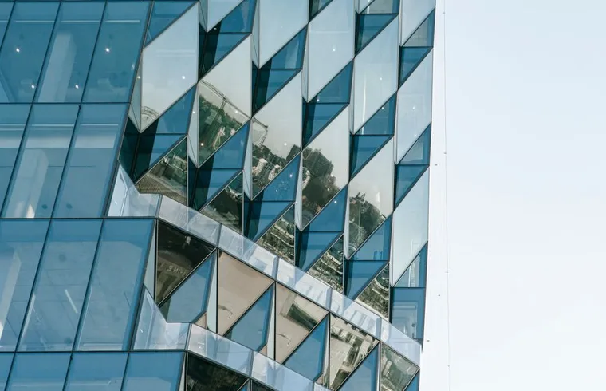
Structural glazing
Minimal visible framing gives the façade a continuous glass appearance. We discuss the look of the glass and the fixing details to suit the building design.
Building façades · Storefronts
Madinah, Saudi Arabia
Custom aluminum and glass work for homes, shops and commercial buildings in Madinah, from the façade to the finishing details.
Explore our services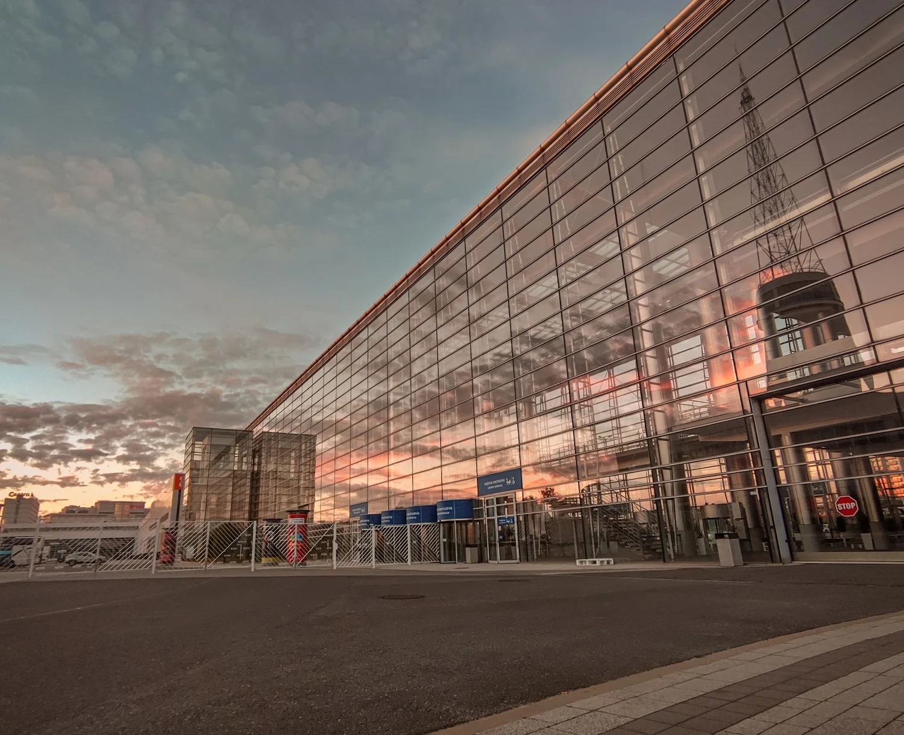
Façades & interiors
Made to measure
Serving Madinah
Our services
From glazed façades and skylights to kitchens, showers and made-to-measure mirrors, explore what ZAGO can build for homes and businesses in Madinah.

Minimal visible framing gives the façade a continuous glass appearance. We discuss the look of the glass and the fixing details to suit the building design.
Building façades · Storefronts
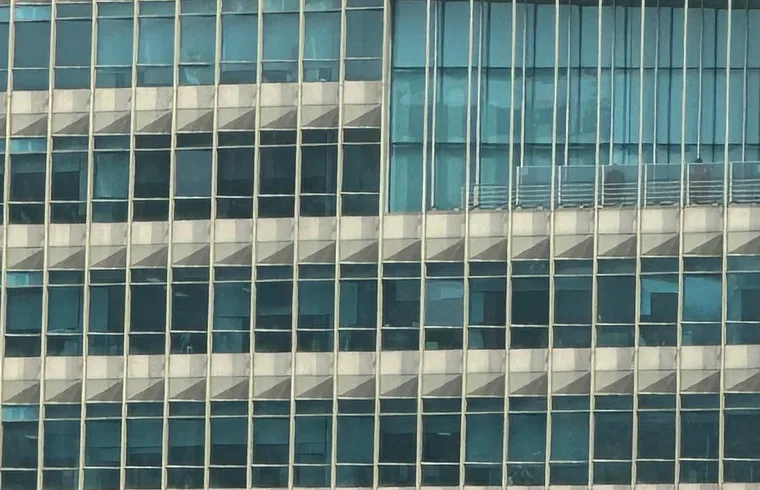
Non-load-bearing aluminum and glass façades that span multiple bays or floors. We coordinate the frame layout and openings with the building design.
Offices · Commercial buildings
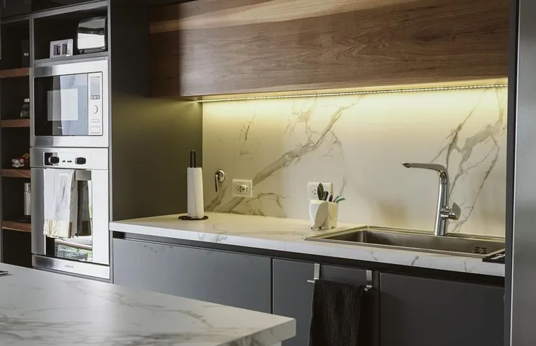
Wall units, base cabinets and drawers made to fit your kitchen. We plan storage, finishes, handles and space for your appliances around the layout.
New kitchens · Renovations
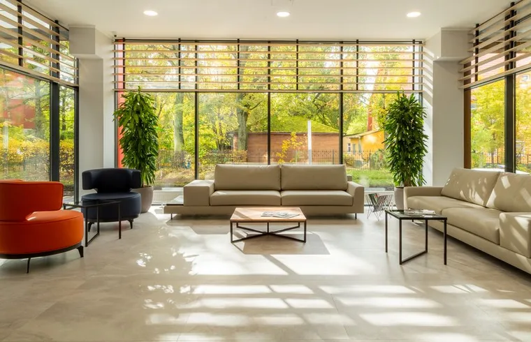
Fixed, sliding or hinged windows sized to the opening. Choose the frame style and glazing based on the room’s daylight, ventilation and privacy needs.
Homes · Offices · Replacements
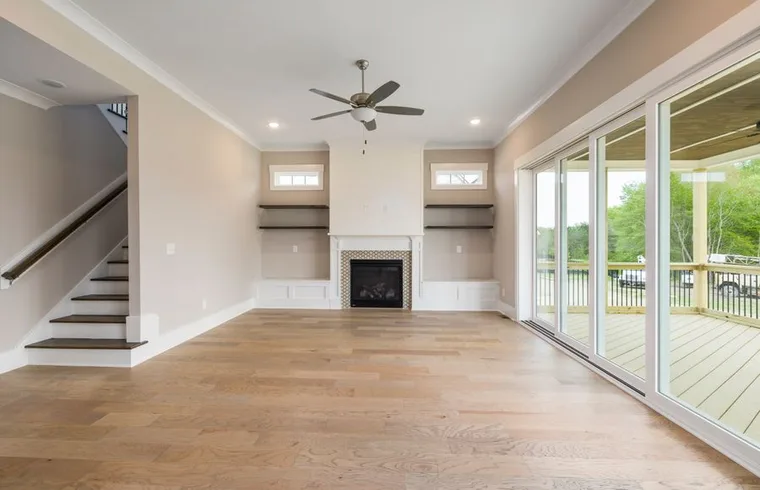
Sliding and hinged doors for interior and exterior openings. We help match the opening style, hardware and glazing to the space and how it’s used.
Entrances · Patios · Shops
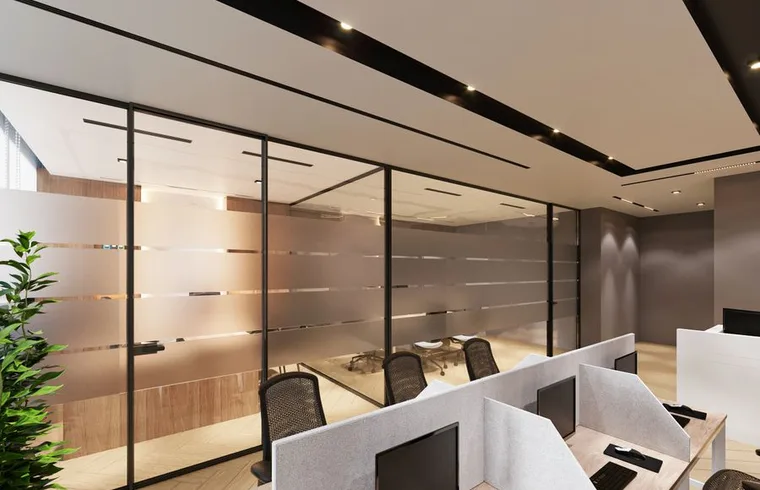
Divide a space without closing off the daylight. We plan interior partitions with clear or frosted glass, depending on the privacy you need.
Meeting rooms · Offices · Interiors
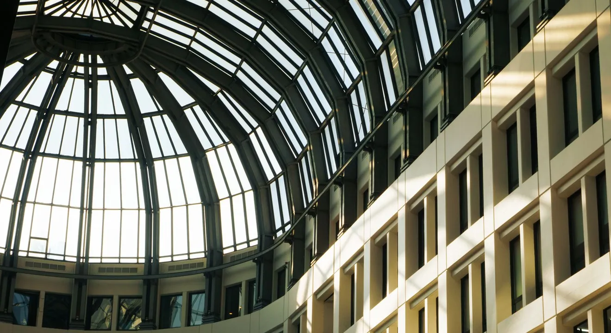
Aluminum-framed skylights bring daylight into spaces where wall windows aren’t enough. We discuss the roof opening, glazing and desired daylight, and account for weather sealing and rainwater drainage.
Stairwells · Corridors · Atriums
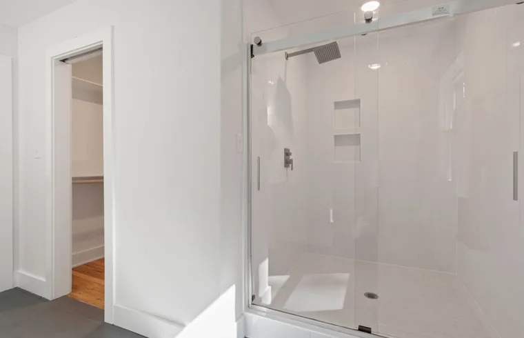
Made-to-measure framed or frameless enclosures. Choose fixed screens, sliding doors or hinged doors based on the space available and where water needs to be contained.
New bathrooms · Renovations
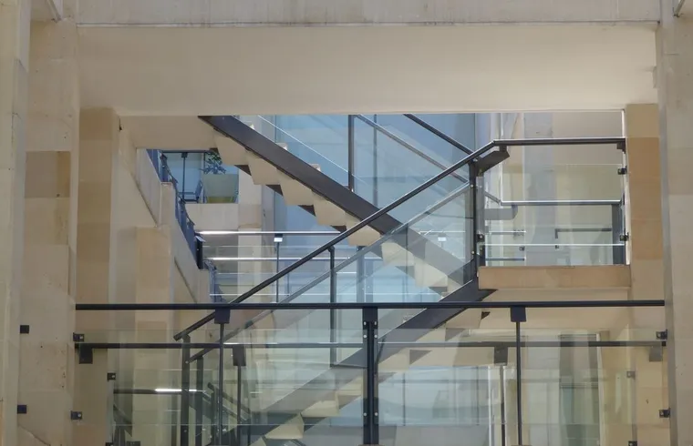
Glass infill keeps views open along stairs and balconies. We discuss safety glazing, handrail finishes and mounting options suited to the site.
Stairs · Balconies · Landings
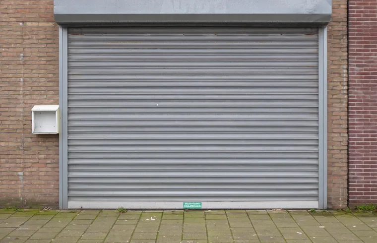
Aluminum shutters roll into a housing above the opening. We discuss manual or electric operation based on the opening size, available clearance and how often you use it.
Storefronts · Windows · Garages
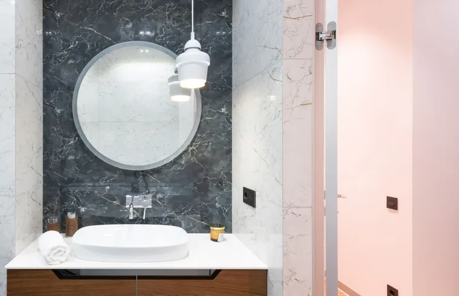
Mirrors cut to fit a wall or vanity. Choose the shape and edge finish, with or without a frame, to suit the room and the mounting surface.
Bathrooms · Dressing rooms · Shops
Photography illustrates the services and does not depict completed ZAGO projects.
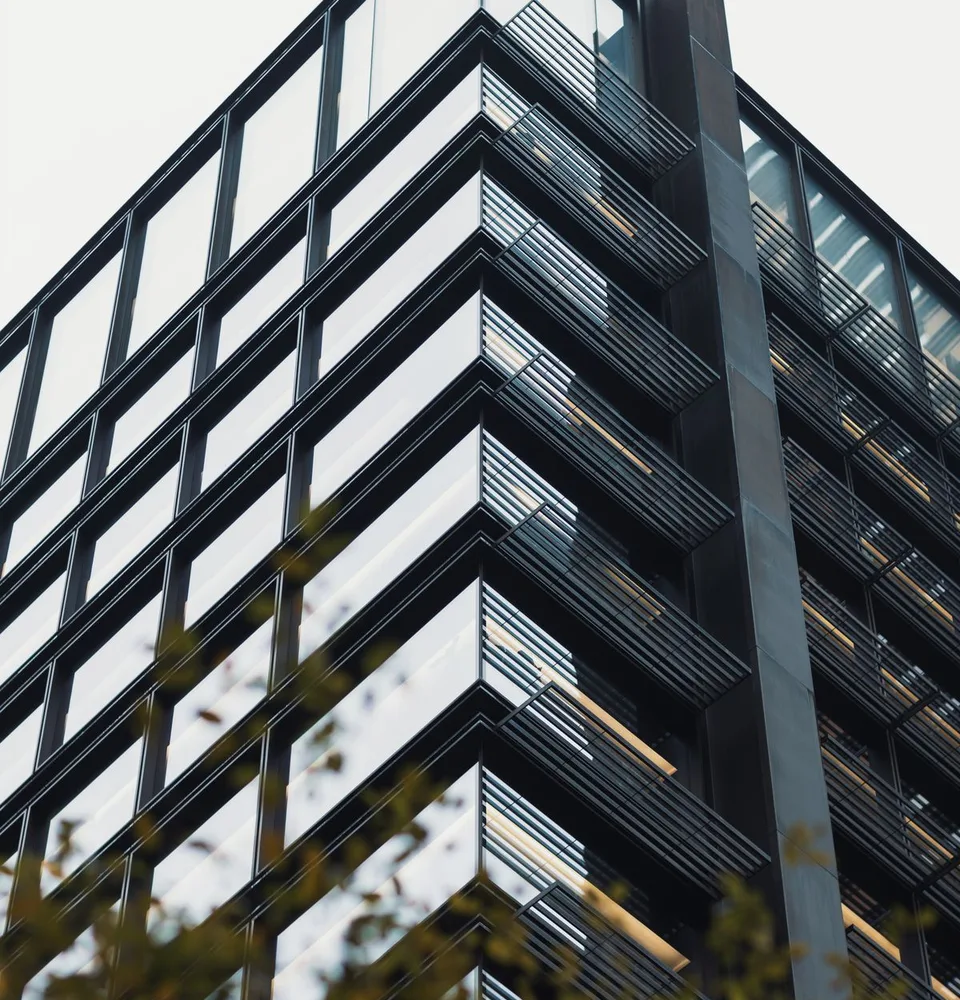
Why ZAGO
Good aluminum and glass work depends on how it fits the space and how people use it, not just how it looks.
We start with the site dimensions and account for the walls, openings and everyday use.
Compare glass, finishes and opening styles so you can choose what suits your project and budget.
Call or message us directly to discuss measurements and installation options.
Our process
A short description and a few photos help us understand your project and suggest the next step.
Call or send a WhatsApp message with the type of work and its location in Madinah. Include photos and rough dimensions if you have them.
We discuss glass, frame and finish options and confirm which measurements are needed to prepare a quote.
Once the scope is agreed, we coordinate made-to-measure fabrication and installation around the site.
Get in touch
Ask about aluminum and glass work in Madinah or send your project details to request a quote.